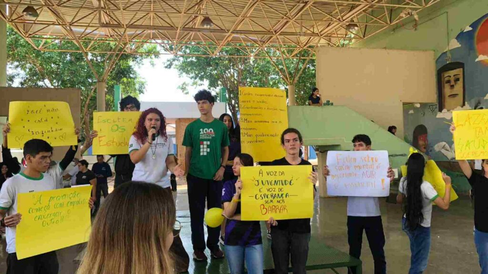

Estudantes do IFMS protestam por mais apoio psicológico após suicídio de colega
Educação | 14/02/2026

Um mês após o suicídio de um ex-aluno de 15 anos, estudantes do Instituto Federal de Mato Grosso do Sul (IFMS), em Campo Grande, realizaram um protesto pacífico na manhã desta sexta-feira (10). O grupo cobrou da instituição mais estrutura e ações voltadas à saúde mental.
Os alunos apresentaram um abaixo-assinado com quatro reivindicações e cerca de 120 assinaturas, além de um manifesto de dez páginas que será entregue à direção. Entre os pedidos estão a criação de campanhas permanentes de prevenção ao suicídio, maior divulgação dos serviços de apoio psicológico e autonomia para promover eventos sobre o tema.
“Queremos ter voz e ser ouvidos pela direção. Nosso objetivo é fortalecer as ações de acolhimento e prevenção”, afirmou a estudante Angelina Quevedo Bakargi, de 17 anos, uma das organizadoras.
Em nota, o IFMS reconheceu a importância da promoção da saúde mental e reafirmou o compromisso com o bem-estar dos mais de 1.700 alunos. A instituição informou que conta com três psicólogas para acolhimento e orientação, e que busca ampliar parcerias e fluxos de atendimento.